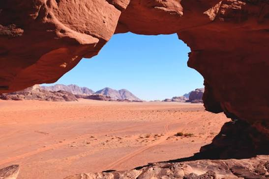
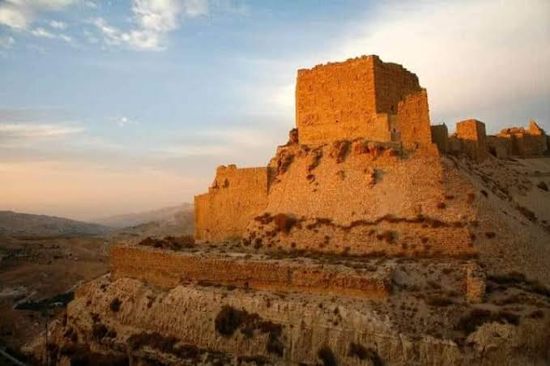
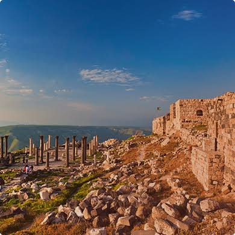
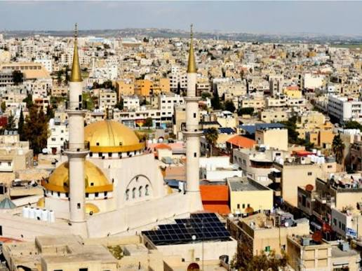

البتراء
المدينة الوردية، إحدى أشهر الوجهات الأثرية في العالم، وتتميز بمبانيها المنحوتة في الصخور.
المحافظة: معان
نوع السياحة: تاريخية
يضم الأردن مجموعة متنوعة من الأماكن السياحية التي تناسب محبي التاريخ والطبيعة والمغامرات والاستجمام.
اختر المكان الذي ترغب في اكتشافه.
المدينة الوردية، إحدى أشهر الوجهات الأثرية في العالم، وتتميز بمبانيها المنحوتة في الصخور.
المحافظة: معان
نوع السياحة: تاريخية

مدينة أثرية رومانية تضم الشوارع والأعمدة والمسارح القديمة.
المحافظة: جرش
نوع السياحة: تاريخية

صحراء ساحرة تشتهر بالجبال الرملية والتخييم ورحلات المغامرات.
المحافظة: العقبة
نوع السياحة: مغامرات

أخفض منطقة على سطح الأرض، ويشتهر بمياهه شديدة الملوحة والطين الغني بالمعادن.
المحافظة: مادبا
نوع السياحة: علاجية

قلعة تاريخية بارزة تتميز بموقعها الاستراتيجي وعمارتها العسكرية القديمة.
المحافظة: الكرك
نوع السياحة: تاريخية

تتميز بالغابات والجبال والطبيعة الخضراء والأجواء الجميلة.
المحافظة: عجلون
نوع السياحة: طبيعية

وادٍ طبيعي يتميز بالمياه المتدفقة والنباتات والمناظر الطبيعية الخلابة.
المحافظة: الكرك
نوع السياحة: مغامرات

مدينة أثرية قديمة تتميز بإطلالاتها الجميلة على بحيرة طبريا ووادي الأردن.
المحافظة: إربد
نوع السياحة: تاريخية

موقع أثري يتميز بمبانيه الحجرية السوداء وآثاره التاريخية الفريدة.
المحافظة: المفرق
نوع السياحة: تاريخية

تشتهر بالفسيفساء والخرائط التاريخية والكنائس القديمة.
المحافظة: مادبا
نوع السياحة: ثقافية

موقع ديني وتاريخي مهم، يتميز بإطلالته الواسعة على المنطقة المحيطة.
المحافظة: مادبا
نوع السياحة: دينية

قصر أموي تاريخي يشتهر بالرسومات الجدارية والزخارف القديمة.
المحافظة: الزرقاء
نوع السياحة: تاريخية